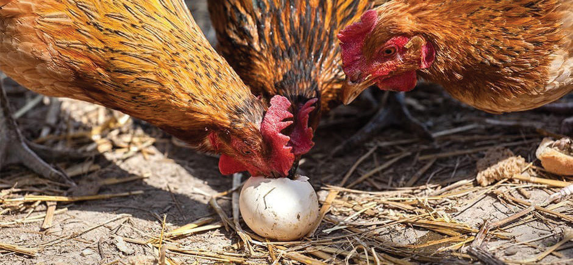

(i)
As a last resort, trim the birds’ beaks when other methods have failed. But don’t trim the beaks of free-range birds as they need to pick food.
Egg eating:
Birds can start eating their eggs if they find the broken or soft-shelled ones. If this habit is not stopped, it can spread. This habit shows that the chickens are not well looked after. Figure 10.17 shows egg eating.

Figure 10.17: Egg eating
Source: https://cdn.shopify.com/s/files/1/0039/4647/9689/files/chickens-eating-from-egg.jpg
There are several ways to prevent egg eating in chickens. For example, you can:
- (a)Give chickens enough good food and a safe place to live.
- (b)Keep the inside of the laying nest dark.
- (c)Improve feed quality and quantity, especially minerals to keep good quality egg shells.
- (d)Make sure no eggs should stay in the nests overnight after the last collection.
- (e)Provide ad libitum clean water to avoid thirst.
- (f)Trim the excessively long beak (de-beaking).
Management of parasites and diseases in chickens
Two approaches are applied in the management of parasites and diseases; preventive and curative. While preventive ways focus on the control measures against the